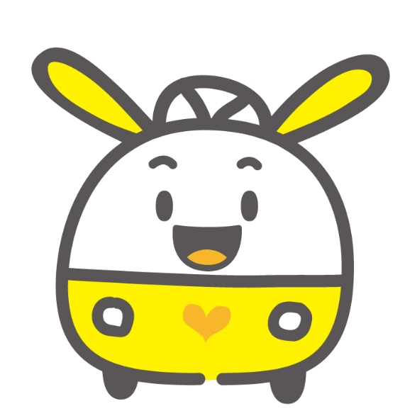
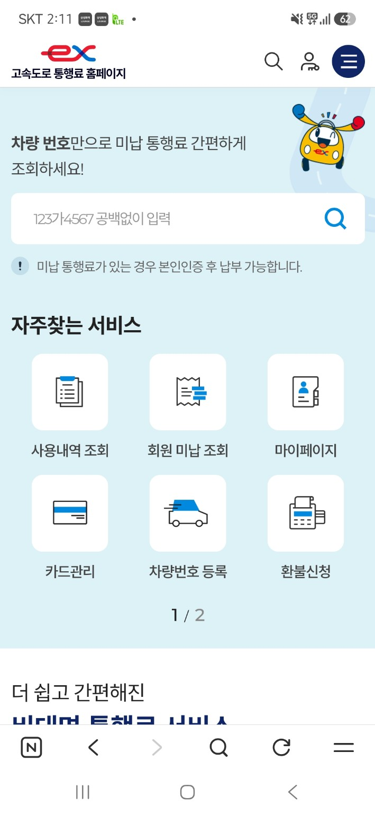
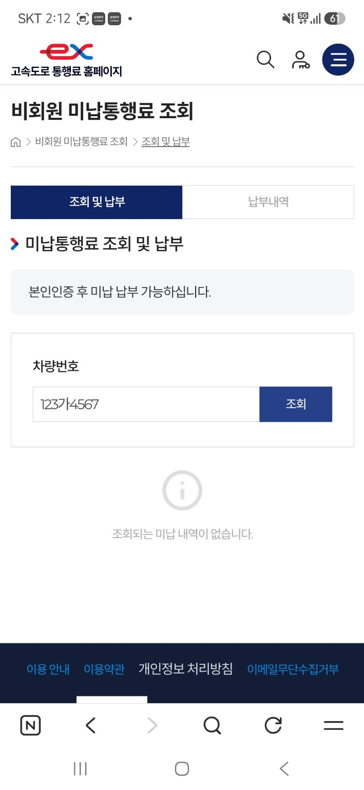

Korea Expressway Corporation · Capital Region Headquarters
외국인을 위한 하이패스 홈페이지 이용 안내 및 전화납부 안내
미납통행료 조회·납부 방법과 상담 방법을 6개 언어로 안내합니다.

이 페이지는 이용방법과 상담채널을 안내합니다.
언어를 선택하세요
선택한 언어로 안내 내용을 확인할 수 있습니다.
하이패스 홈페이지 이용방법
공식 하이패스 홈페이지에서 미납통행료를 조회하고 납부하는 기본 순서입니다.
미납통행료 조회·납부 순서
1
차량번호 입력
차량번호를 공백 없이 입력합니다.
2
조회 선택
돋보기 또는 ‘조회’ 버튼을 누릅니다.
3
미납이 있는 경우
공식 홈페이지의 안내에 따라 본인인증을 진행합니다.
4
미납내역 확인 후 납부
미납내역을 확인하고 이용 가능한 방법으로 납부합니다.

① 하이패스 홈페이지 첫 화면에서 차량번호 입력칸을 찾습니다.

② 비회원 미납통행료 조회 화면에서도 차량번호로 조회할 수 있습니다.
미납 발생 일시·이용구간 등 상세 확인이 필요한 경우 하이패스 홈페이지를 이용하거나 한국도로공사가 운영하는 가까운 영업소를 방문하세요.
하이패스 홈페이지 바로가기 ↗
스마트폰 자동번역 방법
하이패스 홈페이지가 한국어로 표시되면 브라우저 번역 기능을 이용하세요.
아래 화면은 Android Chrome 기준입니다. 휴대전화와 브라우저 버전에 따라 메뉴 위치는 다를 수 있습니다.
1
Chrome 메뉴 열기
오른쪽 위의 ⋮ 메뉴를 누릅니다.
2
‘번역’ 선택
메뉴에서 번역 기능을 선택합니다.
3
원하는 언어 선택
원하는 언어를 선택하면 페이지가 번역됩니다.
상담 및 문의
온라인 이용이 어렵거나 전화로 납부 안내가 필요한 경우 이용하세요.
☎전화납부 상담
한국도로공사서비스 서부권역본부
031-361-3021 ~ 3026
평일 09:00 ~ 18:00
차량번호로 미납내역을 확인한 후 납부계좌를 문자로 별도 안내해드립니다.
🏢한국도로공사가 운영하는 가까운 영업소 방문
온라인 이용이 어렵거나 미납 발생 일시·이용구간 등 상세 확인이 필요한 경우 가까운 영업소를 방문하세요.
💬챗봇 상담
준비 중
상담 전 준비사항
차량번호
상담 시 차량번호를 알려주세요.
미납 안내문·고지서·문자
받은 안내가 있는 경우 함께 확인하면 상담이 편리합니다.
문자를 받을 수 있는 휴대전화
납부계좌 안내 문자를 받을 수 있는 휴대전화를 준비하세요.
유의사항 / FAQ
미납통행료 이용 전에 알아둘 내용을 확인하세요.
반복 미납 시 부가통행료 ×10
최근 1년간 미납이 20회 이상 발생하면 20회째 미납 건부터 통행료의 10배에 해당하는 부가통행료가 부과될 수 있습니다.
장기 체납 시 법적 조치 가능
장기 체납 시 차량 강제인도·공매, 재산 압류, 형사고발 등의 조치가 진행될 수 있습니다.
미납통행료는 어떻게 조회하나요?
하이패스 홈페이지에서 차량번호를 입력해 조회할 수 있습니다. 메인 메뉴의 ‘하이패스 홈페이지 이용방법’을 참고하세요.
전화로 납부하려면 어떻게 하나요?
평일 09:00~18:00에 한국도로공사서비스 서부권역본부(031-361-3021~3026)로 전화하세요. 미납내역 확인 후 납부계좌를 문자로 안내해드립니다.
하이패스 홈페이지가 한국어로 나오면 어떻게 하나요?
스마트폰 브라우저의 자동번역 기능을 이용하세요. 이 페이지의 ‘스마트폰 자동번역 방법’에서 화면을 따라 확인할 수 있습니다.
편의점에서도 납부할 수 있나요?
고지서 종류와 납부기한 등에 따라 편의점 납부가 제한될 수 있습니다. 안내문을 확인하거나 전화상담 또는 영업소 방문을 통해 확인하세요.
미납 발생 일시나 이용구간을 확인하려면 어떻게 하나요?
하이패스 홈페이지를 이용하거나 한국도로공사가 운영하는 가까운 영업소를 방문해 확인하세요.
한국어 전화상담이 어렵습니다.
bbb코리아 1588-5644의 외국어 전화통역 서비스를 이용할 수 있습니다.